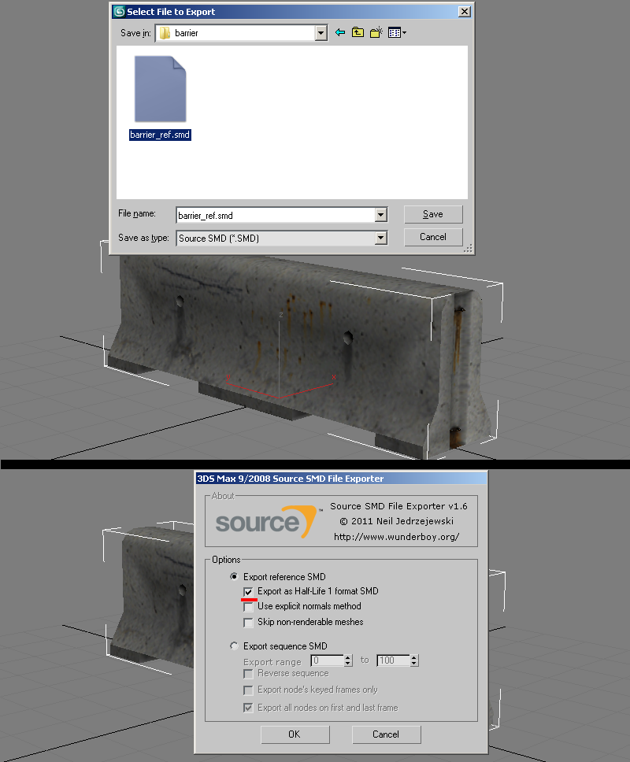
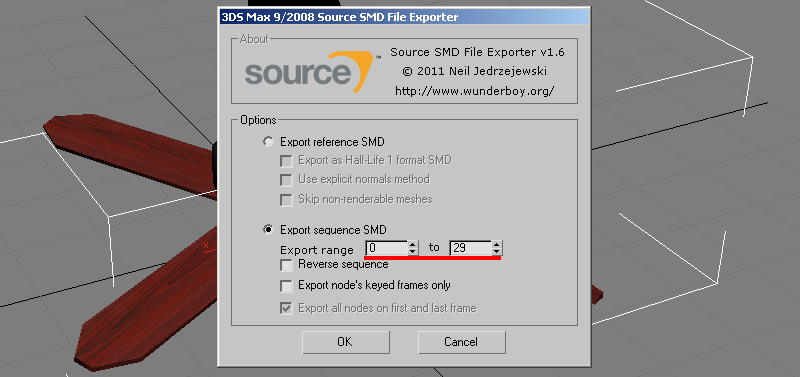
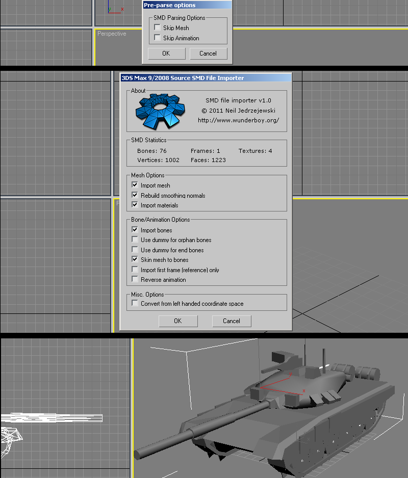
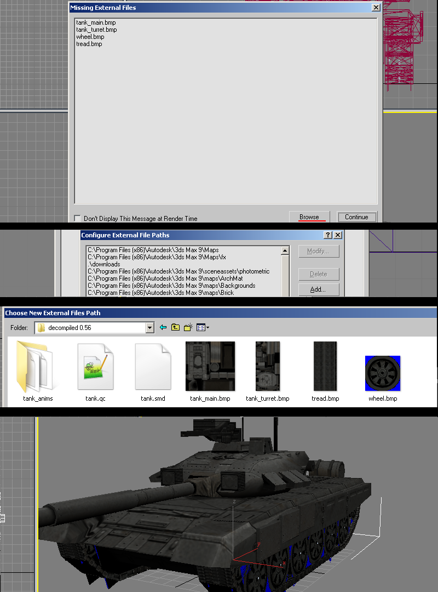
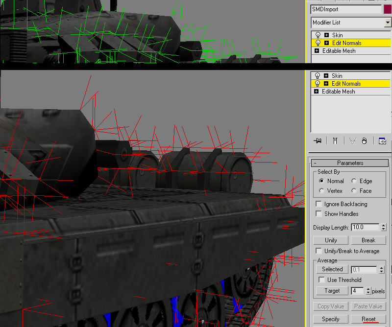
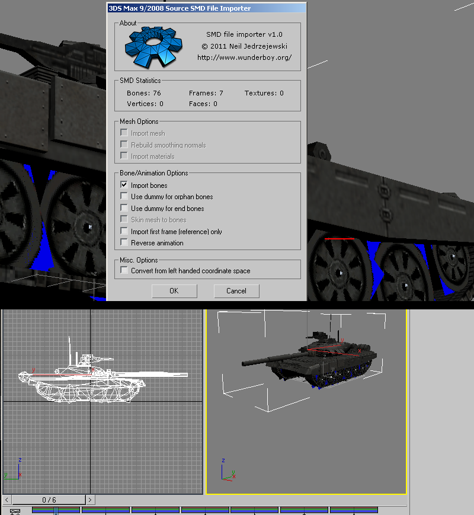

3D Studio Max With Wunderboy's Exporter

"Wunderboy's Exporter" which can be downloaded here.
Supported versions are:
V1.6: 3DS Max 9~2012
V1.7: 3DS Max 2017~2020
This exporter is the only one that supports older legacy versions of max. The 3DSmax exporters will export any unskinned mesh with its own node, so if you don't have a skeleton&skin modifier, the exporter will still export your mesh(es). If your model has been scaled/editied extensivley, Id reccomend reset Xform before exporting.
Jump to Exporting Animations Jump to Importing Meshes Jump to Importing Animations
1) With Wunderboy's legacy version (v1.6) its reccomended to have your model as editiable mesh instead of editiable poly as well as collapsing the stack with the exception of the skin modifier which needs to sit on top. Go to file>export "Source SMD", and check "Export reference SMD" with "Export as Half-Life 1 format SMD. Optionally check "Use explicit normals method" checkbox if you are using explicit normals or imported geometry.

2)Make note of your sequence range and how many frames you are exporting. Export as before only, choose the "sequence" option.
Continue to Compiling

It should be noted that you are not confined to animating at 30 keyframes frames per second, as you can set different speeds in your QC compile script. So for example if you just need a very simple idle sequence you can set your 3dsmax timeline to custom "FPS" to say 10fps, then set 10fps in your QC script on compile. This will play in game and interpolate the frames accordingly. You can play with tweaking speeds either on the 3deditor side and/or the QC script side.
Continue to Compiling
1)Go to File> Import > Valve SMD as type and import your SMD. You will be promted with an options window, but for the most part these default settings are fine. If your model has multiple meshes, you can keep using this import option to import more SMD's and each mesh will combine with existing skeletons.

2)Upon import the materials are not loaded. To recconect them ive found the fastest way to do so is save your document, and reopen it which gives you the "Missing Materials" option window. Go to "Browse" button and then on the "Configure File Paths" window click the "Add" button. You will then navigate to your folder of textures. Once done, verify the added path is correct. In some old max versions it may get the path below, so sometimes you may have to choose a folder inside the location of your textures close the windows and you will see your model with materials.
 General editing info to note and working with Explicit vertex normals
Some important things to note about about working with imported geometry in 3dsmax is that if you want to make minor edits (say like UV changes with UVW Unwrap modifier) with the skinning intact, then create the modifier below the "Skin" modifier in the stack.'
SMD imports are done with "explicit normals" for smoothing. These can be a bit difficult to work with and at times may break while adding to the modifier stack. If you are doing simple edits like removing parts it may be best to do your import without "edit poly" in the import options. Some modifiers that break smoothing you can possibly try making an edit normals modifier and placing it on top, but sometimes that only works with edit mesh.
For topology edits with edit poly or needing to edit smoothing, you will need to add an "edit normals" modifier and either directly edit the explicit normals (green sticks) or if you need to use smoothing groups, you will have to select the normals or select all (sticks turn red), and press "reset." After deselecting the sticks should be blue to indicate they are now in face render mode and able to be editied by smoothing groups and auto smoothing in editable poly.

Continue to Compiling
1)Go to File> Import > Valve SMD as type and import your SMD. You will be promted with a window to choose the range of frames to import. By default its full range of frames in SMD. The animation will be loaded onto the model or if no model loaded will load in as bones.
The timeline will be adjusted accordingly to the amount of frames imported. Refer to the models QC file to set a custom FPS for the timeline to match what the animation was authored for if needed.
